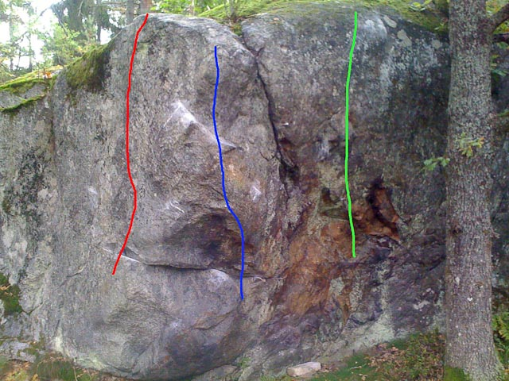

Dog rock
GPS: 59.308599,18.426105
Allmänt
Liten bouldervägg på Värmdö med en handfull fina problem. Se även
Mölnvik
Vägbeskrivning
Väg 222 värmdöleden.
Vänster i stora Mölnviks-rondellen, sedan vänster igen mot Bygg-Ole. Vänster i pytte-rondellen och under motorvägen. Parkera vid brukshundklubben.
Fortsätt sedan asfaltsvägen till fots (ca 150 m) tills du har en äng på vänster sida. Korsa ängen så kommer du fram till väggen.
Boulderproblem
Sittstart på samtliga problem

- röd
- 1
- 6a
- Aretens vänstra sida
- grön
- Lifsens rot
- 7B+
- Bakom eken,stå start via en bra pinch, kanske liten list till ett mycket slopigt utsteg.
Finns ett till projekt på högra sidan av eken

- grön
- Salad fingers
- 6b
- Till vänster om tallen, rakt upp
- röd
- Bondesökerfru
- 6a+
- Samma start, upp till höger
- blå
- Lussekatten
- 7b
- Till höger om tallen. vänster hand på crimp, höger hand i gaston

- blå
- The Thing
- 6b+
- -etablerad start. Vänster hand sidotag och höger hand på bra crimp sedan upp och lätt till vänster. Sittstarten blir ng annat (bara ett/två move till etablerad start). OBS:Morpho,är man lång går det nog att nå etablerad start grepp.
-
- OddJobb
- 6a
- Projekt bakom björken, sittstart till vänster om den tydliga rampen, kroppstungt pga trångt bakom björken i starten,start syns på bilden ovan, sedan till rampen och lätt åt höger

-
- En sälsam historia
- 5c
- problemet längst till höger. Startar på stor jug.
Klippan 50m bakom dog rock
-
- Glöggparty
- 7a
- Start i tydliga startgrepp, rakt upp till läppen och sedan trv till vänster, utsteg i slopig groove
Det finns ett projekt på samma sten med insteg ifrån vänster med samma utsteg ca. 7B+ och ytterligare ett projekt till höger om Glöggparty (samma startgrepp).
Det finns en till liten vägg mot vattnet, samt flera problem i skogen..mest gjort av Trevor
Kategori:vertikalt
Kategori:överhäng
kategori:Saknar skrivarformatering
Category:Stockholm
Kategori:Nacka-Värmdö
Copyright (C) Permission is granted to copy, distribute and/or modify this document under the terms of the GNU Free Documentation License, Version 1.3